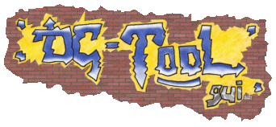

 DC-TOOL
GUI Changements comparé à la version
v1.1
Ce
fichier indique les changements et ajouts qui ont été effectués
depuis la version v1.1 de DC-TOOL GUI. Il n'est pas terminé, d'autres changements
peuvent arriver.
Ajout d'une
barre de progression pour toutes les opérations de DC-TOOL.
La fenêtre de progression
n'est plus modale (elle ne bloque plus l'application).
Cette fenêtre (de progression)
se réduit d'elle même une fois l'opération terminée.
Ajout d'un arbre d'historique,
permettant de ré-executer des applications ou d'aller à des
blocs de lignes.
Le Debug Log (la fenêtre
de debug) est maintenant un RichEdit en couleurs.
Toutes les opérations
de copie / sélection / sauvegarde... etc. sont possible pour tous les
debug logs.
Support des deux DC-TOOL :
DC-TOOL normal (=série) et DC-TOOL-IP (=bba).
Ajouts des boîtes de
dialogues conséquentes (=IP de communication pour le BBA).
Ajout de filtres permettant
de ne pas ajouter les lignes inutiles dans le debug log. Tout est configurable.
Vous pouvez même visionner les lignes "effacés".
Les options avancées
de DC-TOOL (=Chroot to path, ISO redirection) sont maintenant prises en compte.
Un assistant de configuration
est disponible.
Le DC-TOOL interne peut être
remplacé : Correction de certains bugs à ce niveau là.
Les DLL de Cygwin ne sont plus
imposées.
Le programme utilise la DLL
de détection d'état des BIN, BINCHECK.DLL, que j'avais faite
pour SBI Builder. Elle permet de détecter l'état d'un BIN (scrambled/unscrambled)
et de scrambler ou d'unscrambler un fichier (merci à Fackue pour le
code original).
Des options diverses ont été
ajoutés (comme un avertissement lors d'un problème d'upload,
etc).
Un Historique des fichiers
utilisés a été ajouté.
Vous pouvez tester l'état
de la connection maintenant.
Si DC-TOOL GUI plante, vous
pouvez tenter de le re-initialiser à partir du menu fichier.
Vous pouvez copier votre BIOS.
Vous pouvez faire des copies
de sauvegardes du GD-ROM inséré dans votre Dreamcast (utilise
le DreamRip de BERO).
Vous pouvez gérer
votre VMU. (utilise le VMU Tool de speud).
Un beau logo a été
fait... :)
Une aide CHM est en cours.
DC-TOOL GUI v1.2 possède
un module de traduction. Il y'a que Anglais et Français (pour l'instant?).
Bien sur, l'application a été
un peu debuggée depuis (j'ai fait mon installation).
Trop de changements ont été
fait pour tous les mettres ;)